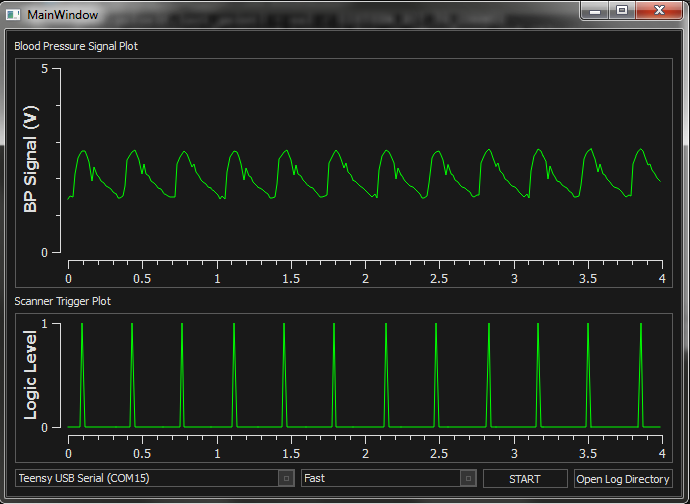
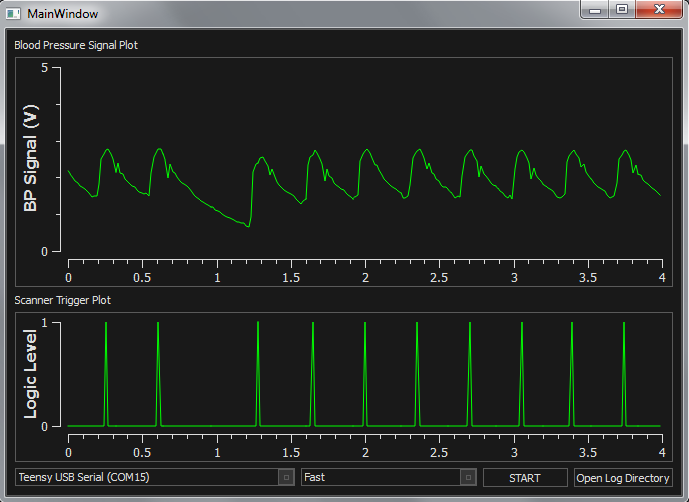
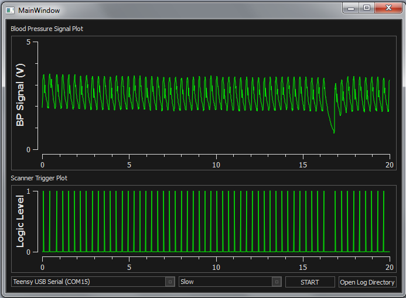

Testing Against Fetal Lamb BP Data
Dr. Jonathan Mynard of Australia was kind enough to provide me with three ~30 second invasive pressure catheter recordings taken in a fetal lamb. These recordings are slightly unusual, because they have extra systolic beats, which lead to little skips in the waveform. These recordings are a useful analog for the fetal pig pressure waveform, because pigs are also prone to extra systolic beats, and fetal lambs and fetal pigs have similar fetal heart rates.
To test these values, I used an Arduino Due as a waveform generator, and generated a 1-3V signal, which I then divided down to 0.5-1V
Information about the heart rate of a sedated fetal pig in this paper: http://jap.physiology.org/content/90/4/1577 Effects of morphine and naloxone on fetal heart rate and movement in the pig
Test results:
Data File 1:
Here's a zoomed in snapshot of the triggering system operating on a fetal lamb:

Here's a section of the fetal lamb's blood pressure trace that has a skip beat, which are common in both lambs and pigs:

This zoomed out view shows the 30s pulse waveform

I ran tests like these on a variety of different pulse pressure waveforms, on lamb data, human data, pulse oximeter recordings of my own heart, and simulated arterial blood pressure pulses that I generated using an arbitrary function generator. The pressure trigger unit performed excellently with all of the little variations in waveform shape, magnitude, offset drift and frequencies. I'm very content with the results.